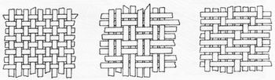
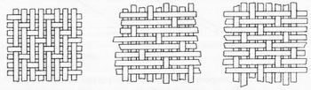
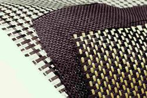

|
1 Polyester;
Özellikle
denizcilik ve inþaat alanýnda en çok kullanýlan termoset reçinedir.
Kompozit malzemelerde kullanýlan 2 tür polyester reçine vardýr;
daha ekonomik olan ortoftalik ve suya dayaným gibi daha iyi
özelliklere sahip olan isoftalik polyester. Polyester reçinelerini
polimerizasyon süreçlerinin tamamlamasý için katalizör ve
hýzlandýrýcý olarak adlandýrýlan ek maddelere ihtiyaç duyarlar.
Türkiye'de Cam Elyaf A.Þ. nin yanýsýra Boytek Reçine,
Boya ve Kimya Sanayi Ticaret A.Þ. gibi firmalar da genel amaçlý
kullanýmlar için polyester üretmektedir.
Reçinelerin avantaj ve dezavantajlarý;
o
Kolay kullaným
o Çok düþük maliyet, 0.5 - 1 $/kg
? Sertleþme sýrasýnda yüksek oranda çekme
? Zehirli Sitiren gazý yayma
? Orta mekanik özellikler
? Kýsa raf ömrü
2
Epoksiler; geniþ kullaným alanýna sahiptirler. (prepregs
olarak) havacýlýk, spor, ulaþým, askeri ve deniz araçlarý elemanlarý.
o
Ýyi mekanik özellikler
o Suya dayaným
o Islakken 140ºC, kuruyken 220ºC 'ye kadar ýsý dayanýmý
o Sertleþme sýrasýnda düþük oranda çekme
? Yüksek maliyet, 5 - 25 $/kg
? Cilde aþýrý zararlý
? Doðru karýþým son derece önemli (Hayati)
3
Vinil ester;
o
Son derece yüksek kimyasal/çevresel dayaným
o Polyesterden daha yüksek mekanik özellikler
? Aþýrý sitiren içermesi
? Polyesterden daha pahalý, 4 - 7 $/kg
? Ýyi özellikler için ikincil kür iþlemi gerekir.
? Sertleþme sýrasýnda yüksek oranda çekme
4
Bismaleimid (BMI); Uçak motorlarýnda ve yüksek ýsýya maruz
kalan parçalarda kullanýlýr
o
Son derece yüksek ýsý dayanýmý, Yaþken 230°C, kuru halde 250°C
? Çok yüksek maliyet, 80 $/kg
5
Fenolikler; Ateþe dayaným ihtiyacý olan yerlerde kullanýlýr.
Kür iþleminin buharlaþma özelliði hava boþluklarýn oluþmasýna
ve yüzey kalitesinin düþmesine neden olur. Uçaklarýn iç bölümlerinde,
deniz araçlarýnýn motorlarýnda ve demiryollarýnda kullanýlýr.
o
Yüksek ateþ dayanýmý
o Düþük maliyet, 4 - 8 $/kg
? Yaþ halde son derece zararlý
? Oldukça kýrýlgan
? Düþük yüzey kalitresi
6
Silikon;
o
Yüksek ateþ dayanýmý
o Yüksek ýsýlarda ürün özelliklerini koruyabilme
? Kür iþlemi için yüksek ýsý gereklidir
? Malityeti 30 $/kg'dan az
7
Cynate Esters; Esas olarak uçak endüstrisinde kullanýlýr.
Mükemmel yalýtkanlýk özelliðine sahiptir. Yaþ durumda 200ºC'ye
kadar dayanýmý vardýr.
8 Poliimidler
9 Poliüretan
Termoplastik Matrisler;
Termoplastik
polimerlerinin çeþitlerinin çok fazla olmasýna raðmen matris
olarak kullanýlan poýlimerler sýnýrlýdýr. Termoplastikler
düþük sýcaklýklarda sert halde bulunurlar ýstýldýklarýnda
yumuþarlar. Termosetlere göre matris olarak kullanýmlarý daha
az olmakla birlikte üstün kýrýlma tokluðu, hammaddenin raf
ömrünün uzun olmasý, geridönüþüm kapasitesi ve sertleþme prosesi
için organik çözücülere ihtiyaç duyulmamasýndan dolayý güvenli
çalýþma ortamý saðlamasý gibi avantajlarý bulunmaktadýr. Bunun
yanýsýra þekil verilen termoplastik parça iþlem sonrasý ýsýtýlarak
yeniden þekillendirilebilir. Oda sýcaklýðýnda katý halde bulunan
termoplastik soðutucu içinde bekletilmeden depolanabilir.
Termoplastikler yüksek sertlik ve çarpma dayanýmý özelliðine
de sahiptirler. Yeni geliþmelerle termoplastiðin saðladýðý
bu artý deðerleri son dönem termoset matrislerinden 977-3
Epoksi ve 52450-4 BMI reçineleri de saðlamaktadýrlar.
Termoplastiklerin
kompozit malzemelerde matris olarak tercih edilmemelerinin
baþlýca nedeni üretimindeki zorluklarýn yanýsýra yüksek maliyetidir.
Oda sýcaklýðýnda düþük iþleme kalitesi saðlarlar, bu onlarýn
üretimde zaman kaybýna yol açmasýna neden olur. Bazý termoplastikleri
istenilen þekillere sokabilmek için çözücülere ihtiyaç duyulabilir.
Termoplastikler termosetlere kýyasla hammaddesi daha pahalýdýr.
Devamlý kullaným sýcaklýklarý 60ºC ile 245ºC arasýnda deðiþebilen
termoplastik reçine çeþitleri bulunmaktadýr.
Tablo
2. Belli baþlý termoplastik reçineleri ve iþlem ýsýlarý (Azom)
|
Malzeme
|
Erime
sýcaklýk aralýðý (°C) |
Maksimum
iþlem sýcaklýðý (°C) |
PP
|
160-190 |
110 |
| PA |
220-270 |
170 |
| PES-
poli eter sülfon |
- |
180 |
| PEI-
polieterimid |
- |
170 |
PAI-
poliamid imide
|
- |
230 |
| PPS-
polfenilen sulfit |
290-340 |
240 |
| PEEK-
polieter eter keton |
350-390 |
250 |
Baþlangýçta
amorf yapýlý reçinelerden polietersulfon (PES) ve polieterimid
(PEI) matris olarak kullanýlmaktaydý. Sonraki dönemde ise
havacýlýk sektörü uygulamalarý için çözücülere karþý dayaným
önemli bir kriter olarak ortaya çýkmýþtýr. Bu ihtiyaç sonrasýnda
Polietereterketon (PEEK) and Polifenilen sulfid (PPS) gibi
yarý-kristal yapýlý plastik malzemeler geliþtirilmiþtir.
Ayrýca sýnýrlý oranlarda Poliamidimid (PAI) ve Poliimid
gibi plastiklerde kullanýlmaktadýr. Bu polimerler diðer
termoplastiklerden farklý olarak polimerizasyonlarýný kür
aþamasýnda tamamlarlar. En yoðun çalýþmalar ise PA, PBT/PET
ve PP gibi düþük sýcaklýklarda kullanýlan polimerlerin üzerine
yapýlmýþtýr. Tüm bu polimerlerin haricinde ABS, SAN, SMA
(StirenMaleikAnhidrit), PSU (Polisülfon), PPE (Poifenilen
Eter) matris olarak kullanýlýr.
Termoplastik
reçineler malzemenin çekme ve eðilme dayanýmlarýnýn artýrýlmasý
için kullanýlýrlar. Otomotiv sektöründe yaygýn olarak kullanýlan
termoplastikler uçak sanayisinde de yüksek performanslý malzeme
çözümlerinde kullanýlmaktadýrlar. Çoðunlukla enjeksiyon ve
ekstrüzyon kalýplama yöntemleri ile üretilen termoplastiklerin
üretiminde GMT (Glass Mat Reinforced Thermoplastics / Preslenebilir
Takviyeli Termoplastik) olarak ta üretilmektedir (Bkz. kompozit
malzeme üretim yöntemleri). Bu yöntemle hazýrlanan takviyeli
termoplastikler soðuk plakalarýn preslenebilmesi ve geri dönüþüm
sürecine uygunluðundan dolayý özellikle otomotiv sektöründe
tercih edilmektedir.
Takviye Malzemeleri (Elyaflar)
Kompozit
malzemelerde kullanýlan elyaflarýn fiziksel biçimleri, oluþturulan
yeni malzemenin özellikleri üzerinde çok önemli bir faktördür.
Takviyeler temel olarak 3 farklý biçimde bulunmaktadýrlar;
parçacýklar, süreksiz ve sürekli elyaflar. Parçaçýk genelde
küresel bir biçimde olmamasýna raðmen her yönde yaklaþýk olarak
eþit boyutlardadýr. Çakýl, mikrobalonlar ve reçine tozu parçaçýk
takviyelerine örnekler arasýnda sayýlabilir. Takviye malzemelerinin
bir boyutu diðer boyutlarýna göre daha fazla olduðunda elyaflardan
bahsetmeye baþlarýz. Süreksiz elyaflar (doðranmýþ elyaflar,
öðütülmüþ elyaflar veya whiskers-püskül) birkaç milimetreden
birkaç santimetreye kadar deðiþen ölçülerde olabilmektedir.
Çoðu lifin çapý birkaç mikrometreyi geçmemektedir. Bu nedenle
elyafýn parçacýk halden lif haline geçiþi için çok fazla bir
uzunluða gerek yoktur.
Sürekli
elyaflar ise tel sarma yöntemi gibi yöntemlerde kesilmeden
ip þeklinde kullanýlmaktadýr. Elyaflar en yüksek mekanik özelliklerini
enlerinden daha çok boylarýna gösteririler. Bu özellikler
kompozit malzemelerin metallerde rastlanmayan aþýrý anisotropik
malzeme özelliði göstermelerine neden olur. Bu nedenle tasarým
aþamasýnda elyaflarýn reçine içindeki yerleþimleri ve geometrilerini
göz önünde bulundurmak çok önemlidir. Malzemenin anisotropik
özelliði tasarým aþamasýnda ürünün uygun yerinde kullanýlarak
avantaja dönüþebilir.
Bazý
durumlarda malzemenin dayanýmý artýrmak, tüm yönlerde eþit
mukavemet elde etmek için elyaflar kumaþ olarak dokunurlar.
Sürekli liflerle hazýrlanan dokuma elyaf kumaþlarýnýn farklý
amaçlar için geliþtirilmiþ türleri vardýr.


Resim
3. Elyaf Dokuma Türleri
Cam
elyafýnýn günümüzde en çok kullanýlan ve geçerli takviye malzemesi
olmasýna raðmen geliþmiþ kompozit malzemelerde genellikle saf
karbonun elyafý kullanýlmaktadýr. Karbon elyafý cam elyafýna
oranla daha güçlü ve hafif olmasýna raðmen üretim maliyeti daha
fazladýr. Hava araçlarýnýn iskeletlerinde ve spor araçlarýnda
metallerin yerine kullanýlmaktadýr. Karbon elyafýndan daha güçlü
ve aybný zamanda daha pahalý olan ise bor lelyafýdýr.

Resim
4 .Karbon Elyaf Örnekleri
Polimerler
matris olarak kullanýlmalarýnýn yanýsýra kompozitler için elyaf
üretilmesinde de kullanýlmaktadýr. Kompozit malzemeye çok yüksek
düzeyde saðlamlýk katan ve sertlik kazandýran Kevlar (Aramid)
bir polimer elyafýdýr. Hafiflik ve güvenilir konstrüksiyon amaçlanan
ürünlerdeki kompozit malzemelerde aramid kullanýlýr. Malzemelerin
Anisotropik Ve Ýzotropik Özellikleri Uzun lifli elyaflar kullanýldýðýnda
liflerin yönlerini deðiþtirilerek farklý yönlerde farklý mekanik
özellikler elde etmek mümkündür. Bu duruma anisotropik özellikler
denir. Metal gibi bazý malzemeler her yönde ayný mekanik özellikleri
gösterirler, bu duruma ise isotropik özellik denir.Kompozit
malzemelerde kullanýlan baþlýca elyaf türleri;
1
Cam elyafý,
2 Karbon (Graphite) elyafý, (PAN -polyacrylonitrile- ve zift
kökenli)
3 Aramid (Aromatic Polyamid) elyafý, (Ticari ismi; Kevlar-DuPont)
4 Bor elyafý,
5 Oksit elyafý,
6 Yüksek yoðunluklu polyetilen elyafý,
7 Poliamid elyafý,
8 Polyester elyafý,
9 Doðal organik elyaflar
Bu
elyaflar arasýndan en çok Cam, Karbon ve Aramid elyaflarý
kullanýlmaktadýr. Bu üç elyaf türü de güçlü, sert ve sürekli
biçimde üretilebilmektedirler.
|